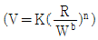
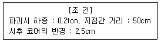

화약류관리산업기사 (2009-08-30 기출문제)
1과목: 일반화약학
1. 질산나트륨 분해시 1g당 산소의 과부족량 (OB)은?(오류 신고가 접수된 문제입니다. 반드시 정답과 해설을 확인하시기 바랍니다.)
- -0.2
- +0.34
- -0.392
- +0.471
(정답률: 알수없음)
2. 폭약은 어떤 약경 이하에서는 폭광을 일으키지 않는다. 이때의 약경을 무엇이라 하는가?
- 폭발약경
- 한계약경
- 무연약경
- 폭연약경
(정답률: 알수없음)

3. 군용 화약으로 소총 실탄 등에 주로 사용되는 것은?
- ANFO
- TNT
- 무연 화약
- 흑색 화약
(정답률: 알수없음)
4. 흑색 화약(Black powder)에 대한 설명 중 옳은 것은?
- 폭발 반응 후 가스가 발생하지 않아 갱내 폭파에 적당하다.
- 뇌관을 사용치 않고 도회선만으로 폭발시킬 수 있다.
- 화학적으로 안정하며, 습기 중에도 장기간 저장이 가능하다.
- 조성물은 KNO3, C 뿐이다.
(정답률: 알수없음)
5. 질산암모늄 폭약에 대한 설명으로 틀린 것은?
- 흡습성이 강하다.
- 흡습한 폭약은 강도가 증가한다.
- 흡습한 폭약은 굳어지기 쉽다.
- 고화방지제로 목(木)분을 섞어 줄수 있다.
(정답률: 알수없음)
6. 폭속 5000m/s의 도폭선을 사용해서 도트리쉬 폭속법에 의해 폭약의 폭속을 측정하려고 한다. 도폭선의 중심과 일치된 납판 위의 점에서부터 폭혼까지의 거리가 5cm이고 폭약에 도폭선을 꽂은 간격은 10cm일 때 시료폭약의 폭속은 얼마인가?
- 2500m/s
- 3500m/s
- 5000m/s
- 7500m/s
(정답률: 알수없음)
7. 뇌홍의 저장 방법으로 옳은 것은?
- 건조분말 상태로 저장한다.
- 물속에 저장한다
- 유기용제에 용해하여 저장한다.
- 진공 속에서 저장한다.
(정답률: 알수없음)
8. 과염소산암모늄의 분작식에 해당하는 것은?
- NH4ClO3
- NH4ClO4
- NH4Cl3
- NH4Cl4
(정답률: 알수없음)
9. 도화선과 도폭선에 대한 설명으로 옳은 것은?
- 도화선의 심약에는 주로 무연화약이 사용된다.
- 도폭선은 다량의 폭약을 동시에 발파시킬 때 사용된다.
- 도화선의 연소시간은 1m당 약 50∼60초 이다.
- 도폭선은 폭속이 약 1000m/s 이하이어야 한다.
(정답률: 알수없음)
10. 화약류에 관한 설명으로 옳은 것은?
- DDNP는 둔감한 폭약의 예강제로서 쓰인다.
- 펜트리트는 니트로화합물 폭약이다.
- 뇌홍, 아지드화연은 점화만으로는 연소할 뿐 폭발하지 않는다.
- 목분은 쉽게 연소하여 가스의 발생량을 증가시킨다.
(정답률: 알수없음)
11. 다음 중 감열소염제로 주로 사용되는 것은?
- 질산암모늄
- 니트로글리세린
- 규소철
- 식염
(정답률: 알수없음)
12. 다이너마이트에 함유된 니트로셀룰로오스의 작용은?
- 예감제
- 소염제
- 산소공급제
- 교화제
(정답률: 알수없음)
13. 뇌관 1개의 저항 1.4Ω인 전기뇌관 10발을 직렬로 결선하여 제발하려면 최소 몇 V의 전압이 필요한가? (단, 전선 1m의 저항은 0.02Ω 이고 전선의 총 연장길이는 100m이며, 뇌관 1개당 소요 전류눈 2A, 발파기의 내부저항은 없다고 한다.)
- 9
- 18
- 32
- 36
(정답률: 알수없음)
14. 뇌관의 위력을 측정하는 납관시험에서 사용하는 납관의 두께는?
- 2mm
- 3mm
- 4mm
- 5mm
(정답률: 알수없음)
15. 다음 화약류 중 소량의 화염 등 고열원으로 확실하게 폭발하는 기폭약에 해당하는 것은?
- TNT
- 아지화날
- NG
- 피크린산
(정답률: 알수없음)
16. 부동 다이너마이트를 제조하기 위해 니트로글리세린에 혼합하는 물질은?
- 니트로글리콜
- 니트로페놀
- 니트로벤졸
- 니트로톨루엔
(정답률: 알수없음)
17. 흑색화약 제조과정 중 2미혼화 과정에서 혼합하는 것은?
- 숯가루+질산칼륨
- 황+숯가루
- 황+질산칼륨
- 아연분+숯가루
(정답률: 알수없음)
18. 다음 중 폭발암의 단위로 옳은 것은?
- cal/kg
- kgf/cm2
- m/s
- m3/kg
(정답률: 알수없음)
19. 질산에스테르 화합물이 다량으로 포함된 폭약은?
- 피크린산
- 테트릴
- TNT
- 젤라틴 다이너마이트
(정답률: 알수없음)
20. 다음 화약 중 폭속이 가장 큰 것은?
- TNT
- 흑색화약
- 질산암모늄 폭약
- 테트릴
(정답률: 알수없음)
2과목: 발파공학
21. 다음 소할 발파법에 대한 설명 중 틀린 것은?
- 소할 발파법에는 천공법, 사혈법, 복토법이 있다.
- 복토법에서 사용되는 폭약은 발파소음, 암석의 비산 등을 고려하여 폭속과 앵도가 작은 것을 사용해야 한다.
- 천공법은 다른 방법보다 소량의 폭약으로도 발파가 가능하기 때문에 효과적이다.
- 사혈법은 옥석이나 암석의 밑부분에 구멍을 파고 폭약을 장전해서 발파하는 방법이다.
(정답률: 알수없음)
22. 발파현장에서 암반천공작업에 의해 발생되는 음향파워레벨이 120dB이다. 수음점이 천공작업을 실시하는 장소와 완전 노출되어 있으며 평지이다. 음원과 수음점이 50m 이격된 거리에서의 음압레벨은? (단, 음원은 점음원으로서 반구연파 전파로 간주한다.)
- 63.94dB
- 78.02dB
- 83.25dB
- 99.25dB
(정답률: 알수없음)
23. 다음 중 미진동 파쇄기에 의한 발파 방법의 설명으로 틀린 것은?
- 천공은 약동경에 맞추어서 32∼34mm 가 좋다.
- 미진동 파쇄기는 가스압에 의해 미파괴체를 파쇄하기 때문에 전색물이 가장 중요하다.
- 전색물은 바로 굳지 않으므로 여름철에는 전색 후 30분 이상의 대기시간이 필요하다.
- 전색재료로는 포틀랜드 시멘트, 건조된 모래, 시멘트 급결재의 비중비를 2:1:1의 비율로 혼합한다.
(정답률: 알수없음)
24. 발파작업시 사용되는 안전덮개(비산 방호재)의 충족요건으로 가장 거리가 먼 것은?
- 충분한 강도를 갖고 상호 연결될 수 있는 것
- 유연성이 있어 굴곡면을 덮을 수 있는 것
- 비교적 빈틈이 적고, 가스 투과성이 없는 것
- 가능한 큰 면을 덮을 수 있는 것
(정답률: 알수없음)
25. 수중발파에서 천공 및 장약을 위한 OD(overburden drilling)법의 설명으로 틀린 것은?
- 이중천공장치로 되어 있으며 기반암에 도달하면 내부의 연결식 천공비트에 의해 천공한다.
- 천공이 완료되면 비트를 뽑아내고 플라스틱 호스를 설치한다.
- 정전기에 의한 뇌관의 폭발위험이 있으므로 압축공기에 의한 정전은 피한다.
- 각 천공은 2개 이상의 뇌관으로 연결하여 폭발신뢰도를 높인다.
(정답률: 알수없음)
26. 다음 중 decoupling 효과를 이용한 발파방법이 아닌 것은?
- smooth blasting 공법
- pre-splittin 공법
- gurbanite 공법
- WSB(Wide Space Blasting) 공법
(정답률: 알수없음)
27. 발파에 관한 이론 중 'Daw 이론‘에 대한 설명으로 맞는 것은?
- 약실의 투사면적을 크게 하여 전입력을 증대시키기 위해서는 파괴면에 대하여 약실을 수직으로 설치하면 최대투시면적을 갖게 할 수 있다.
- 약실의 단위면적에 작용하는 압력을 크게 하여 파괴력을 증대시키려면 폭약의 장전비중을 작게 해주어야 한다.
- 전압력을 크게 하려면 약실의 투시면적과 약실의 단위면적에 작용하는 압력을 크게 하면 된다.
- 발파효과 상승 및 불발방지를 위해 폭약을 최대한 가압하여 폭약의 비중을 증대시켜야 한다.
(정답률: 알수없음)
28. 다음 중 전색물의 조건으로 옳지 않은 것은?
- 발파공벽과 마찰이 커서 발파에 의한 발생 가스의 압력을 이겨낼 수 있는 것
- 탄성률이 작지 않아서 쉽게 변형되지 않는 것
- 재료의 구입과 운반이 쉽고 값이 저렴한 것
- 틈새를 쉽게 빨리 메울 수 있는 것
(정답률: 알수없음)
29. 발파진동 측정방법 중 진동픽업의 설치 방법으로 틀린 것은?
- 진동픽업의 설치장소는 옥외지표를 원칙으로 하고 복잡한 반사, 회절현상이 예상되는 지점은 피한다.
- 진동픽업의 설치장소는 완충물이 없고, 충분히 다져서 단단히 굳은 장소로 한다.
- 진동픽업은 수평방향 진동레벨을 측정할 수 있도록 설치한다.
- 진동픽업의 설치장소는 경사 또는 요철이 없는 장소로 하고, 수평면을 충분히 확보할 수 있는 장소로 한다.
(정답률: 알수없음)
30. 발파기가 갖추어야 할 성능에 대한 설명으로 틀린 것은?
- 절연성이 좋을 것
- 파손되지 않도록 견고할 것
- 도난 방지를 위해 중량이고 대형일 것
- 메탄, 탄진에 안전할 것
(정답률: 알수없음)
31. 노천 발파를 시행하고자 공경 114mm, 천공장 15m의 발파공 20개를 천공하였다. 이때 전색장은 5m이며, 사용된 폭약은 안포(ANFO)이며 비중은 0.82 였다. 사용된 안포의 총장약량은 얼마인가? (단, 전폭약의 약량은 고려하지 않는다.)
- 84kg
- 840kg
- 1,674kg
- 3,348kg
(정답률: 알수없음)
32. 발파에 의해 발생하는 발파풍압의 감소방안으로 틀린 것은?
- 방음벽을 설치함으로써 소리의 전파를 차단한다.
- 기폭방법은 역기폭보다 정기폭을 사용한다.
- 완전전색이 이루어지도록 한다.
- 벤치의 높이와 천공경을 줄여 지발당 장약량을 감소시킨다.
(정답률: 알수없음)
33. 인장강도가 60kgf/cm2인 암반을 선균열(pre-splitting) 발파하려고 한다. 직경 75mm의 장약공내 작용압력이 750kgf/cm2이라면 장약공 간의 최대간격은?
- 87.04cm
- 75.02cm
- 43.52cm
- 37.55cm
(정답률: 알수없음)
34. 계단높이(H)에 대한 저항선(B)의 비(H/B)가 3인 벤치발파에서 지발발파 설계시 기준이 되는 공간격(S), 저항선(B), 계단높이(H)의 관계식은?
- S=(H+2B)/3
- S=2B
- S=(H+7B)/8
- S=1.4B
(정답률: 알수없음)
35. 다음 중 시험발파의 목적이 아닌 것은?
- 발파계수 산정
- 발파진동 입지상수 산정
- 표준장약량 산정
- 압축강도 산정
(정답률: 알수없음)
36. 다음 발파 효과에 영향을 주는 변수들 중 조절이 가능한 변수가 아닌 것은?
- 비장약량
- 불연속면
- 단위천공률
- 최소저항선
(정답률: 알수없음)
37. 다음 발파해체공법 중 붕락시 구조물을 외축에서 내축으로 끌어당기도록 유도하는 공법으로 붕괴 대상을 주변의 부지공간이 적은 도심지에서 사용하기에 가장 적합한 것은?
- 내파공법(Implosion)
- 단축붕괴공법(Telescoping)
- 점진붕괴공법(Progressive Collapse)
- 연속붕괴공법(Sequenced Racking)
(정답률: 알수없음)
38. 다음은 안전발파설계에 흔히 사용되는 경험적 발파진동식이다. 이 식에 대한 설명으로 틀린 것은?

- R/Wb를 환산거리로 정의한다.
- b는 장약형태에 따른 값이다.
- K와 n은 지반의 진동감쇠특성을 나타낸다.
- W는 각 발파공의 장약량을 나타낸다.
(정답률: 알수없음)
39. 다음 중 축벽효과에 대한 설명으로 맞은 것은?
- 공기 중을 전달해 가는 충격파의 속도는 폭약 속에서의 속도보다 느리기 때문에 천공 안의 속을 통해 간 느린 충격파가 폭약 속의 충격파를 방해하야 둔감하게 함으로써 완전폭발을 하지 못하고 잔류하게 되는 현상
- 충격파가 전파되면서 인장파괴를 일으키고, 충격파가 중심으로 방사상으로 인장파괴를 일으키고, 충결파가 자유면에 도달된 후는 그 반사파로 인하여 자유면에 평행인 판상으로 인장파괴를 일으키게 되는 현상
- 암석은 일반적으로 인장강도가 압축강도보다 휠씬 낮으므로 입사할 때의 압력파에는 그다지 파괴되지 않아도 반사할 때의 인장파에는 보다 많이 파괴되는 현상
- 공저에 폭약을 장전하고, 가는 모래로 채워 덮고 폭발시키면 각도 90∼130° 의 원뿔 모양의 구멍이 만들어지는 현상
(정답률: 알수없음)
40. 발파진동차를 감소시키기 위하여 발파공내 주상장약을 분할하여 분산장약(deck charge)하려 한다. 발파공의 직경이 75mm일 때 인접폭약의 기폭을 방지하기 위하여 분할장약들 사이에 필요한 전색장은 얼마인가? (단, 발파공은 건조한 상태이다.)
- 90cm
- 75cm
- 45cm
- 30cm
(정답률: 알수없음)
3과목: 암석역학
41. 초기지압에 대한 설명 중 틀린 것은?
- 주로 암반의 자중에 의해서 발생한다.
- 1차 지압이라고도 한다.
- 연직응력은 항상 수평응력보다 크다.
- 암반에 공동을 굴착하면 초기지압은 변화한다.
(정답률: 알수없음)
42. 암반사면의 불연속면이 주향 N60W, 경사 40NE였다. 이를 수치해석의 압력자료로 사용하기 위해서 경사방향/경사 형태로 변환한 것 중 옳은 것은?
- 060/40
- 330/40
- 290/40
- 030/40
(정답률: 알수없음)
43. 터널설계와 관련하여 강재지보의 특성을 알기위한 시험과 가장 밀접한 것은?
- 점하중강도시험
- 투수시험
- 공내재하시험
- 굴곡강도시험
(정답률: 알수없음)
44. 현지암반의 강도를 추정하는데 가장 널리 사용되는 파괴조건식 중 하나는 Hoek-Brown 파괴조건식이다. 다음 중 Hoek-Brown 기준식은 적용할 수 없고 이방성 기준식을 사용해야 하는 암반은 어느 것인가?
- 무결암(intact rock)
- 단일 절리를 포함하는 암반
- 균일한 강도를 갖는 절리군이 4개 이상인 암반
- 다수의 조밀한 절리군을 내포한 암반
(정답률: 알수없음)
45. 평면변형률상태에서 x면에 작용하는 응력(σx)이 20MPa, y면에 작용하는 응력(σy)이 30MPa이다. 이때 포아송비 (v)가 0.2라면 z방향의 응력(σz)은 몇 MPa인가?
- 0
- 5
- 10
- 15
(정답률: 알수없음)
46. 암반분류법인 Q-시스템에 대한 설명으로 틀린 것은?
- RQD/Jn는 암반을 구성하는 블록의 상대적인 크기를 나타낸다.
- Jr/Ja은 불연속면의 폭과 절리의 간격을 나타낸다.
- Jw/SRF은 현장응력(active stress)을 나타낸다.
- Q-시스템은 6개의 변수를 사용하여 암질을 정량적으로 평가하는 방법이다.
(정답률: 알수없음)
47. 다음 중 굴착지보계수(ESR)의 값이 작은 것부터 큰 것의 순서로 옳게 나열된 것은?
- 지하 철도역 - 대형 철도터널 - 지하저장시설 - 영구적인 광산 갱도
- 대형 철도터널 - 지하 철도역 - 지하저장시설 - 영구적인 광산 갱도
- 영구적인 광산 갱도 - 대형 철도터널 - 지하저장시설 - 지하 철도역
- 영구적인 광산 갱도 - 지하저장시설 - 대형 철도터널 - 지하 철도역
(정답률: 알수없음)
48. 다음 중 평면응력조건을 옳게 나타낸 것은?
- εx=γxz=γyz=0
- εz=0, γxz=γyz≠0
- σz=τxz=τyz=0
- σx=0, τxz=τyz≠0
(정답률: 알수없음)
49. 암석 시추 코어를 이용하여 다음과 같은 조건으로 3점 굴곡시험을 실시하였다. 파괴강도는 얼마인가?

- 104kg/cm2
- 204kg/cm2
- 304kg/cm2
- 404kg/cm2
(정답률: 알수없음)
50. 삼축압축시험을 실시할 때, 봉압이 증가하면서 나타나는 현상이 아닌 것은?
- 최대 강도가 증가한다.
- 취성에서 연성 거동으로 전이 현상이 일어난다.
- 응력-변형률 곡선의 최대 강도점이 편평해지거나 넓어지는 영역이 구체화 된다.
- 최대 응력 후에 변형률 연화현상이 발생한다.
(정답률: 알수없음)
51. 암반사면의 안정성을 해석할 때 필요한 입력자료에 속하지 않는 것은?
- 불연속면의 방향성
- 불연속면의 마찰각
- 사면의 경사방향
- 암반의 탄성계수
(정답률: 알수없음)
52. 암석의 피로(Fatigue)에 대한 설명으로 틀린 것은?
- 암석에 응력을 가하고 제거하는 반복응력을 지속적으로 적용하면 발생한다.
- 피로 파괴는 암석 내 미소균열의 발생 및 성장과 관련이 있다.
- 피로 한계는 정적 일축압축강도의 65∼75% 정도이다.
- Maxwell 물체로 설명할 수 있다.
(정답률: 알수없음)
53. 파괴인성에 관한 설명 중 올바른 것은?
- 균열을 진정시키고자 할 때의 재료의 저항성을 말한다.
- 암석의 압축강도, 인장강도가 증가할수록 파괴인성값은 작아진다.
- 일축압축시험에서 AE(acoustic emission)에 의해 측정한다.
- 파괴인성은 유효공극률이 증가할수록 증가한다.
(정답률: 알수없음)
54. 단축압축 하의 암석의 거동에 대한 설명 중 틀린 것은?
- 최대 강도 이전 변형률이 증가하면 응력이 증가한다.
- 최대 강도 이후 변형률이 증가하면 응력이 감소한다.
- 항복강도 이전에는 암석 내에 안정한 균열이 전파된다.
- 항복강도 이후에는 체적변형률이 급격히 증가한다.
(정답률: 알수없음)
55. 암석의 파괴이론 중 Tresca 이론을 설명한 것으로 틀린 것은?
- 인장강도와 압축강도의 크기가 같게 계산된다.
- 중간주응력을 고려하지 않는다.
- 물체가 전단응력에 의하여 파괴된다고 가정한다.
- 전단강도를 설명하기 위하여 마찰각과 점착강도가 필요하다.
(정답률: 알수없음)
56. 터널 굴착시 계측된 실제 구조물의 변형, 변형률, 응력 등에 따라 설계시 채택한 구조모델로 불확실했던 조건등을 추정하는 방법을 무엇이라고 하는가?
- 탄성해석
- 점탄성해석
- 역해석
- 정해석
(정답률: 알수없음)
57. 다음 중 고전적 탄성이론이 적용될 수 있는 고형체에 대한 설명으로 틀린 것은?
- 물체에 응력이 작용하면 응력방향의 변형률은 작용응력에 반비례한다.
- 물체의 재질은 전 물체를 통하여 균질하게 분포·배열되어 있으며 재질의 탄성적 성질은 물체내 모든 점에서 똑같다.
- 재질의 탄성적 성질은 모든 방향에서 똑같다.
- 변형을 일으키는 힘을 제거하면 물체의 크기와 모양은 완전히 원형의 상태로 돌아간다.
(정답률: 알수없음)
58. 록 볼트의 적정 시공 여부를 검사하기 위한 시험은?
- 반발경도시험
- 인발시험
- 잭 시험
- 관입시험
(정답률: 알수없음)
59. 어느 지역 암반의 RMR 값은 60으로 평가되었다. Bleniawski의 현지암반 변형계수 추정식을 이용하면 이 양반의 변형계수는 얼마인가?
- 10GPa
- 20GPa
- 30GPa
- 40GPa
(정답률: 알수없음)
60. 현장암반의 변형특성을 측정하기 위하여 평판재하시험을 실시하였다. 암반면에 40ton의 하중을 가하여 0.02mm의 변위가 측정되었다면 이 암반의 변형계수는? (단, 암반의 포아송비 0.2, 가압판 반경 45cm)
- 1.13×105kg/cm2
- 2.13×105kg/cm2
- 3.13×105kg/cm2
- 4.13×105kg/cm2
(정답률: 알수없음)
4과목: 화약류 안전관리 관계 법규
61. 화약류저장소의 위치·구조 및 설비를 허가를 받지 아니하고 임의로 변경하였을 때 벌칙은?
- 5년 이하의 징역 또는 1천만원 이하의 벌금형
- 3년 이하의 징역 또는 700만원 이하의 벌금형
- 2년 이하의 징역 또는 500만원 이하의 벌금형
- 1년 이하의 징역 또는 300만원 이하의 벌금형
(정답률: 알수없음)
62. 화약류를 허가 없이 소지할 수 있는 경우가 아닌 것은?
- 행정안전부령이 정하는 사람이 화약류를 소지하는 경우
- 제조업자가 자신이 제조한 화약류를 소지하는 경우
- 판매업자가 화약류를 소지하는 경우
- 화약류의 양수허가를 받은 사람이 그 화약류를 소지하는 경우
(정답률: 알수없음)
63. 일시적인 토목공사를 하거나 그 밖의 일정한 기간의 공사를 하는 사람이 그 공사에 사용하기 위하여 화약류를 저장하고자 하는 때에 한하여 설치할 수 있는 화약류저장소는?
- 1급저장소
- 2급저장소
- 3급저장소
- 간이저장소
(정답률: 알수없음)
64. 화약류 양수허가의 유효기간으로 맞는 것은?
- 최대 3개월
- 최대 6개월
- 최대 1년
- 최대 2년
(정답률: 알수없음)
65. 총포·도검·화약류 등 단속법령상 용어의 정의로 옳지 않은 것은?
- 공실이란 화약류의 제조작업을 하기 위해 제조소 안에 설치된 건축물을 말한다.
- 위험공실이란 취급과정에서 폭발할 위험이 있는 기폭약의 제조시설을 말한다.
- 정체량이란 동일 공실에 저장할 수 있는 화약류의 최대수량을 말한다.
- 보안물건이란 화약류의 취급상의 위해로부터 보호가 요구되는 장비·시설 등을 말한다.
(정답률: 알수없음)
66. 화약류 폐기시 폭발 또는 연소처리를 할 때 폐기 장소 주위에 높이 몇 m이상의 흙둑을 설치하여야 하는가?
- 2m
- 3m
- 4m
- 5m
(정답률: 알수없음)
67. 화약류저장소에 설치하는 피뢰장치의 기준으로 옳은 것은?
- 피뢰도선 및 가공지선의 전극을 땅에 묻을 때에 그 부근에 가스관이 있을 경우에는 그로부터 2m 이상의 거리를 두어야 한다.
- 피보호건물로부터 독립하여 피뢰침 및 가공지선을 설치하는 경우에는 피뢰침 및 가공지선의 각 부분은 피보호건물로부터 2m 이상의 거리를 두어야 한다.
- 피뢰도선을 직선으로 설치하되 부득이 곡선으로 할 때에는 곡률반경을 20cm 이상으로 하여 설치한다.
- 돌창의 지지물로서 철관을 사용할 때에는 피뢰도선이 철관내를 통과하게 하여 외부에 피뢰도선이 나타나지 않도록 한다.
(정답률: 알수없음)
68. 초유폭약에 의한 발파의 기술상의 기준으로 틀린 것은?
- 기폭량에 적합한 전폭약을 같이 사용할 것
- 장전기는 장전작업 중에 정전기가 발생하지 않도록 땅에 닿지 않게 할 것
- 금이 가고 틈이 벌어지거나 공동이 있는 천공된 구멍에는 지나치게 장약을 하는 일이 없도록 할 것
- 가연성 가스가 0.5% 이상이 되는 장소에서는 발파하지 아니할 것
(정답률: 알수없음)
69. 화약류 저장소가 보안거리 미달로 보안물건을 침범했을 경우 행정처분기준으로 맞는 것은?
- 허가취소
- 6월 효력정지
- 3월 효력정지
- 감량 또는 이전명령
(정답률: 알수없음)
70. 간이저장소의 위치·구조 및 설비의 기준에 대한 설명으로 맞는 것은?
- 벽과 천정(2층 이상의 건물인 경우에는 그 층의 바닥을 포함한다)의 두께는 20cm 이상의 철근콘크리트로 할 것
- 지붕은 두께 20cm 이상의 철근콘크리트로 할 것
- 출입문은 두께 2mm 이상의 철판을 사용한 철제로 할 것
- 자동소화설비를 갖출 것
(정답률: 알수없음)
71. 국가기술자격법에 의하여 화약류관리산업기사의 자격을 취득한 사람이 화약류관리보안책임자의 면허를 받고자 할 때에는 다음 중 어는 관청장에게 면허신청서를 제출하여야 하는가?
- 행정안전부장관
- 지방경찰청장
- 한국산업인력공단 이사장
- 관할경찰서장
(정답률: 알수없음)
72. 화약류저장소별 저장량 중 3급 저장소의 저장량으로 옳은 것은? (단, 최대 저장량임)
- 폭약 50kg
- 전기뇌관 10만개
- 미진동파쇄기 1만개
- 신관 및 화관 5만개
(정답률: 알수없음)
73. 꽃불류 사용의 기술상의 기준으로 옳지 않은 것은?
- 풍속이 초당 5m 이상 일때는 꽃불류의 사용을 중지한다.
- 꽃불류를 발사동안에 넣는 때에는 끈 등을 사용하여 서서히 넣는다.
- 꽃불류의 발사용 화약에 점화하여도 그 화약이 폭발 또는 연소되지 아니하는 때에는 그 발사통에 많은 양의 물을 넣고 10분 이상 경과한 후에 회수한다.
- 쏘아 올리는 꽃불류는 20m 이상의 높이에서 퍼지도록 하여야 한다.
(정답률: 알수없음)
74. 폭약 50톤을 저장하는 수증저장소가 있다. 제3종 보안물건과의 보안거리 기준으로 옳은 것은?
- 200m 이상
- 150m 이상
- 100m 이상
- 50m 이상
(정답률: 알수없음)
75. 다음 중 수분 또는 알코올분이 20퍼센트 정도 머금은 상태로 운반하여야 하는 것이 아닌 것은?
- 테트라센
- 펜티에리스릿트
- 디아조디니트로페놀
- 트리니트로레졸산납
(정답률: 알수없음)
76. 사용허가를 받지 아니하고 영화 또는 연극의 효과를 위하여 1일 동일한 장소에서 사용할 수 있는 꽃불류의 수량으로 맞는 것은? (단, 쏘아 올리는 꽃불류는 제외)
- 원료화약 또는 폭약 15g 미만의 꽃불류 50개 이하
- 원료화약 또는 15g 이상 30g 미만의 꽃불류 40개 이하
- 원료화학 또는 30g 이상 50g 이하의 꽃불류 10개 이하
- 발연동·촬영조명등 또는 폭약(폭발음을 내는 것에 한한다) 0.2g 이하의 꽃불류
(정답률: 알수없음)
77. 지하 1급저장소에 폭약 19톤을 저장하는 경우 지반의 두께 기준으로서 옳은 것은?
- 19.5m 이상
- 20m 이상
- 21m 이상
- 24m 이상
(정답률: 알수없음)
78. 화약류관리보안책임자의 주소지가 변경되었을 때 할 일은?
- 15일 이내에 주소지 관할 경찰서에 신고해야 한다.
- 30일 이내에 주소지 관할 경찰서에 신고해야 한다.
- 화약류관리보안책임자면허는 지방경찰청장의 허가사항이므로 주소지 관할 지방경찰청에 30일 이내에 신고해야 한다.
- 15일 이내에 경찰청에 신고하고, 재교부를 받아야 한다.
(정답률: 알수없음)
79. 화약류저장소의 인근에서 화재가 발생하여 긴급을 요할 때 화약류관리자의 응급조치로 옳지 않은 것은?
- 경찰관서에 신고하여야 한다.
- 저장된 화약류를 안전한 지역으로 이전 가능한 경우 이전한다.
- 저장된 화약류를 안전한 지역으로 이전 불가능한 경우 미리 소각한다.
- 필요한 때에는 부근의 주민에게 널리 알려 대피도록 한다.
(정답률: 알수없음)
80. 운반표지를 하지 아니하고 운반할 수 있는 화약류의 수량으로 맞는 것은?
- 폭약 : 10kg 이하
- 미진동파쇄기 : 2000개 이하
- 공업용뇌관 : 1000개 이하
- 총용뇌관 : 10000개 이하
(정답률: 알수없음)